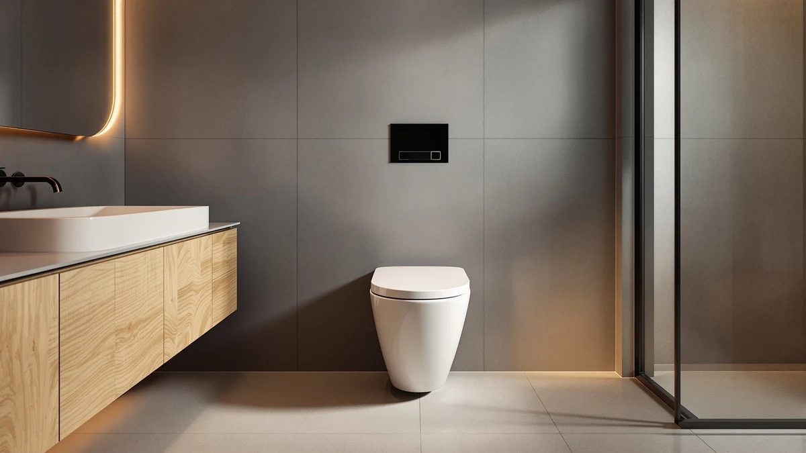

One Piece Toilet Installation Cost (2026): What You'll Really Pay
Prices and picks verified as of August 2026. Independent, reader-supported reviews.


Things to Know Before You Buy
- Labor for a straightforward one piece toilet installation cost runs $150 to $500 in most markets; DIY installation cuts that cost but adds one to three hours of work.
- A cracked wax ring seal, damaged flange, or corroded shutoff valve can add $50 to $250 to your final bill.
- One piece toilets typically cost $50 to $150 more upfront than two piece models, but installation labor is comparable.
- The rough-in measurement, the distance from the wall to the drain center, must match your existing plumbing, usually 12 inches, or the job requires additional plumbing work.
- Ask for an itemized estimate. Most plumbers quote installation separately from removal and disposal of the old toilet.
One piece toilet installation cost typically falls between $224 and $897, and where you land in that range depends on whether a plumber swaps a like-for-like unit or reworks the rough-in plumbing behind your wall. Labor alone runs $150 to $500 in most US markets, while the toilet itself adds another $150 to $400 depending on the model you pick. Add haul-away fees, wax ring replacement, and any shutoff valve repairs, and a straightforward swap can still surprise homeowners who expected a flat $100 job.
The biggest cost swings come from what's hiding under the old fixture. A cracked flange, water damage on the subfloor, or a shutoff valve that hasn't been touched in twenty years all push a plumber's quote higher. We compared quotes and product specs across dozens of installation guides and vendor pages to map out where homeowners actually spend money, including the toilet itself and the parts nobody budgets for.
This guide breaks down what drives one piece toilet installation cost, the terminology contractors use when quoting a job, the mistakes that turn a simple swap into a repeat visit, and how to keep your new toilet running smoothly once it's installed. If you're ready to compare specific models, our top picks below cover a range of prices and bowl shapes.
What You Need to Know
One piece toilet installation cost breaks into three line items: the toilet itself, labor, and incidental repairs. A basic one piece toilet from DeerValley or Casta Diva runs $190 to $240, while premium comfort-height or dual-flush models can climb past $400. Labor is the variable most homeowners underestimate. Licensed plumbers typically charge $150 to $500 for a straightforward swap, and rates shift with your region: installers in major metro areas often charge toward the top of that range, while rural markets run lower.
Removal and disposal of the old unit adds $50 to $100 in many quotes, so ask whether that's already folded into the labor estimate before you sign off. Wax ring replacement is nearly always part of the job (a few dollars in parts, but labor time to seat it correctly), and a new supply line or shutoff valve tacks on another $20 to $75 if the old one is corroded or leaking.
Homeowners who tackle installation themselves can cut total cost by half or more, but the trade-off is time and risk. A poorly sealed wax ring or an improperly torqued closet bolt leads to leaks that cost far more to fix than the labor you saved. Reviewers consistently note that a professional installation, even at $300 to $400, pays for itself if it prevents a single water-damage repair.
Types and Categories
Not every one piece toilet installs the same way, and the type you choose affects both the toilet price and the installation cost. Compact elongated models, like the DeerValley Compact One Piece Toilet, fit tighter bathrooms and typically use standard 12-inch rough-in plumbing, which keeps installation straightforward and inexpensive. Full-size elongated bowls add a few inches of bowl length for comfort but install the same way.
Skirted one piece toilets, such as the Elongated One-Piece Toilet Full Skirt from KK KE KING, hide the trapway behind a smooth panel for easier cleaning. The design adds manufacturing cost to the toilet itself, generally $20 to $50 more than an exposed-trapway model, though installation labor stays comparable since the mounting hardware is the same.
Comfort-height, also called chair-height, toilets sit two to three inches taller than standard models. Installation cost doesn't change much, but older subfloors sometimes need shimming to keep the base level, which can add 15 to 30 minutes of labor.
Dual-flush and water-efficient models carry a price premium of $30 to $80 over standard single-flush units. Owners report that the internal flush mechanism is more complex, so if something needs adjustment after installation, a callback visit costs more than it would for a standard gravity-flush toilet. Matching the type to your bathroom's existing plumbing and subfloor condition, rather than picking on style alone, keeps your total installation cost predictable.
How to Choose
Choosing the right one piece toilet starts with your rough-in measurement, the distance from the finished wall to the center of the drain pipe. Most US homes use a 12-inch rough-in, but older houses sometimes have 10-inch or 14-inch configurations. Buying a toilet that doesn't match forces a plumber to modify the drain line, which can add $200 or more to your installation cost.
Bowl shape matters more than most buyers expect. Elongated bowls offer more seating room and are the standard in modern construction, but they extend two to three inches further into the room than round-front bowls, which matters in a small powder room. If your existing toilet is round-front and you're replacing it with an elongated model, measure clearance to the door and vanity before you order.
Budget for the total project instead of the toilet's sticker price alone. A $200 toilet with a $400 installation quote costs more than a $300 toilet installed for $250, so request itemized quotes from at least two plumbers before committing. Ask specifically whether the quote includes removal of the old toilet, a new wax ring, and testing for leaks after installation, since some contractors bill these as add-ons.
Water usage ratings affect long-term cost more than installation does. WaterSense-certified one piece toilets use 1.28 gallons per flush or less, and several utilities offer rebates of $50 to $100 for upgrading from an older, less efficient model. Check with your local water authority before you buy, since the rebate can offset a meaningful share of your installation cost.
Finally, weigh your own comfort with the removal step. Disconnecting a toilet involves shutting off water, disconnecting the supply line, and unbolting the base from the flange, tasks that are manageable for an experienced DIYer but risky for anyone unfamiliar with plumbing basics. When in doubt, the labor cost of a licensed plumber is cheap insurance against a cracked flange or a leak you don't discover until it's damaged the subfloor.
Common Mistakes to Avoid
The most expensive mistake homeowners make is skipping the rough-in measurement before ordering a toilet. A mismatched rough-in means returning the unit or paying a plumber to modify the drain, either of which raises your one piece toilet installation cost and delays the job by days.
Reusing an old wax ring, or skipping it altogether, is a close second. A worn or improperly seated wax ring leaks slowly, often for weeks before you notice water damage on the ceiling below. Replace the wax ring every time you remove a toilet, even if the old one looks intact.
Overtightening the closet bolts that secure the base to the flange cracks the porcelain, an expensive fix that usually means buying a whole new toilet. Bolts should be snug, not forced; alternate sides in small increments until the base sits flush and doesn't rock.
Skipping a leak test after installation is another common shortcut. Run several flushes and check the base, supply line connection, and tank bolts for moisture within the first 24 hours. Catching a slow leak immediately costs nothing; finding it a month later after it has soaked the subfloor can cost hundreds in repairs.
Don't assume every quote includes disposal of your old toilet. Some contractors charge $25 to $50 extra to haul it away, and skipping that conversation upfront leads to an unpleasant surprise on the final invoice.
Care and Maintenance
A properly installed one piece toilet needs little upkeep, but a few habits extend its life and help you avoid a repeat installation cost down the road. Check the wax ring seal annually by looking for moisture or a slight rocking motion at the base; either sign means the seal has failed and needs replacing before it damages the subfloor.
Clean the bowl with a non-abrasive cleaner rather than harsh chemical drop-in tablets, which can degrade the flush valve and internal seals over time. Owners of skirted one piece models report that the smooth exterior panel makes routine cleaning faster, but the enclosed trapway design makes a clog harder to diagnose without removing the toilet, so keep a flange plunger on hand for minor blockages.
Inspect the supply line and shutoff valve every six months for corrosion or slow drips, especially if your home has hard water. A valve that's seized or leaking is far cheaper to replace on your own schedule than during an emergency.
Tighten the tank-to-bowl bolts if you notice water pooling between the two, but avoid overtightening, since the same porcelain-cracking risk applies during maintenance as during installation. If your toilet is more than ten years old and starting to need frequent adjustments, replacing it, factoring in today's installation cost, is often more economical than continuing to patch an aging unit.
Our Top Picks
If you're ready to buy, these three one piece toilets cover a range of prices and bowl styles, all built around the standard 12-inch rough-in that keeps installation cost predictable.

Editor's Pick
DeerValley Elongated One Piece Toilet
An elongated bowl with a soft-close seat and a compact footprint that fits standard 12-inch rough-in plumbing, making it a straightforward swap for most bathrooms.
$239.19
Check Price on Amazon
Best Value
Casta Diva Compact One Piece
A compact one piece design priced below most elongated competitors, well suited for smaller bathrooms and simple installations.
$209.99
Check Price on Amazon
Premium Choice
Casta Diva One Piece Toilet
A slightly larger bowl and additional finish options than the compact version, with the same straightforward installation profile.
$221.84
Check Price on AmazonFrequently Asked Questions
How much does it cost to install a one piece toilet?
One piece toilet installation cost typically runs $224 to $897 total, combining the toilet price of $150 to $400, plumber labor of $150 to $500, and incidental repairs like a new wax ring or shutoff valve. DIY installation cuts the labor portion but adds one to three hours of work for someone comfortable with basic plumbing.
Is a one piece toilet more expensive to install than a two piece toilet?
Installation labor is comparable between one piece and two piece toilets since both use the same mounting hardware and rough-in plumbing. The one piece unit itself usually costs $50 to $150 more upfront, but it has fewer parts to seal, which can mean fewer leak-related repairs over time.
Can I install a one piece toilet myself?
Yes, if you're comfortable shutting off water, disconnecting a supply line, and working with wax ring seals and closet bolts. Reviewers consistently note that the main installation errors, a cracked flange or overtightened bolts, come from rushing rather than from the job being inherently difficult.
What is included in a typical toilet installation quote?
A complete quote should include removal and disposal of the old toilet, a new wax ring, connecting the water supply, setting and bolting the new toilet, and testing for leaks. Always ask for an itemized quote, since some contractors bill removal and disposal as separate add-ons.
Why do some installation quotes cost so much more than others?
Quotes vary based on regional labor rates, whether the existing flange or subfloor needs repair, and whether the rough-in measurement matches the new toilet. A quote that seems unusually low may not include removal of the old unit or testing for leaks afterward, so compare the full scope of work rather than the bottom-line number.
Verdict
One piece toilet installation cost comes down to three variables you can mostly control: the toilet you choose, the condition of your existing plumbing, and how much of the labor you take on yourself. Budget $224 to $897 for a full professional installation, and don't be surprised if incidental repairs, a corroded shutoff valve or a damaged flange, push you toward the higher end. Measuring your rough-in before you order, requesting an itemized quote, and replacing the wax ring every time are the habits that keep a routine swap from turning into a multi-day repair.
For most bathrooms, a compact 12-inch rough-in elongated model like the DeerValley Elongated One Piece Toilet installs without complications and keeps your total cost predictable. Whether you hire a plumber or handle the job yourself, treat the installation cost as part of the toilet's real price, and you'll avoid the surprises that turn a $200 toilet into a $600 project.